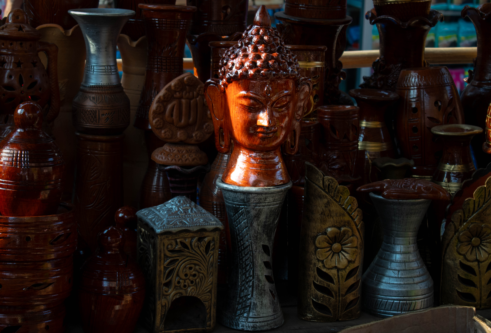

The Buddha

This image captures a collection of intricately
designed pottery and decorative items displayed together. Here are some
points of analysis from a photographer's perspective:
Composition
Subject Focus:
The central focus of the photograph is the prominent, well-lit Buddha
head statue. Its vibrant reddish-brown color and detailed texture stand
out against the darker background objects.
Background and Foreground:
The other pottery items in the background and foreground provide a
rich, textured context, creating a sense of depth and a visually
interesting backdrop for the main subject.
Symmetry and Balance:
While the image is not perfectly symmetrical, the arrangement of
objects creates a balanced composition. The tall vases and various
shapes frame the central Buddha head, drawing the viewer's eye inward.
Lighting
Directional Light:
The lighting seems to come from the left side, casting gentle shadows
and highlighting the texture and details of the Buddha head. This
directional light adds depth and dimension to the image.
Shadow and Highlight Play:
The interplay of shadows and highlights enhances the three-dimensional
appearance of the objects. The reflective surfaces of the polished
pottery catch the light beautifully, adding a dynamic element to the
scene.
Color and Texture
Color Palette:
The warm tones of the pottery, ranging from deep browns to earthy reds,
create a cohesive and inviting color palette. The subtle metallic
accents on some pieces add variety and interest.
Texture:
The image emphasizes the rich textures of the pottery – the smooth,
glossy surfaces of the glazed pieces, the intricate carvings, and the
rougher textures of the unglazed clay. These textures add tactile
interest and a sense of authenticity to the objects.
Depth of Field
Depth of Field:
The photograph employs a relatively deep depth of field, keeping most
of the objects in focus. This choice allows the viewer to appreciate
the details and craftsmanship of each piece, contributing to the
overall richness of the image.
Artistic Intent
Cultural Representation:
The collection of items, especially the Buddha head, suggests cultural
or spiritual significance, possibly hinting at the artistic and
traditional practices of a particular region.
Narrative:
By capturing a diverse array of pottery items together, the photograph
tells a story of artisanship, tradition, and the beauty of handcrafted
objects. The central Buddha head may symbolize peace and serenity,
serving as a focal point that ties the narrative together.
Technical Considerations
Exposure:
The exposure is well-managed, capturing a broad range of tones from the
deep shadows to the bright highlights without losing detail.
Sharpness:
The image is sharp, allowing the textures and details of the pottery
to be clearly visible, which is essential for appreciating the
craftsmanship.
In summary, this photograph showcases a beautifully arranged collection
of pottery with a focus on texture, light, and cultural significance.
The central Buddha head serves as a captivating focal point, drawing
viewers into the scene and inviting them to explore the surrounding
details.